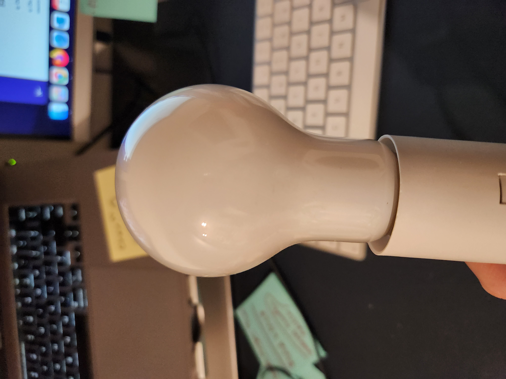

Assignment 5: Getting Meshy! and Lamps!
Part 1
For A5 part 1, I decided to mesh Fat Yoshi and Apple I found on Thingiverse. This took a few tries, as I was not sure if I should use trim to create 'open mesh'. Trimming made my life harder since it created way too many weird issues in the merged mesh. I could not get it to close, even though it looked ok. I did not realize it was closed until I loaded up in Cura.
For my second try, I loaded up the STL files again, ran the QuadRemesh a few more time, lined them up and ran MeshBooleanDifference instead of trim, then ran MeshBooleanUnion. Once I did that I was getting way less errors. It was still a lot of errors, but not as much. I was finally able to get the 'closed mesh' with the 2 STL files. Cura was accepting the STL file as well. This took a lot of guesses and I lost a lot of details from the original source file, so I'd like to explore to keep more details in next time. Yoshi is unrecognizable here!


Source files Part 1
Part 2
To get started on Part 2, I first started out by measuring my light bulb. I got this light bulb from a friend who took this class previously, so not sure where she got it! The measurement for the head of light bulb was 58.18mm, neck was 37mm, and where the part where the cord is connected was 13.67mm. Taking these measurements, I wanted to create a shape where at the top the gap was big enough for the whole lightbulb to get through, and it holds the lightbulb standing up (wehre the cord starts). This way, I can make sure the lightbulb is able to hold and I can also take it out from the top if needed.
I had a lot of trouble making holes using boolean split and difference in the whale file I wanted to use, so for the sake of this assignment I was creating my own shapes to be able to hold the lightbulb. The basic polysurface I created should be able to hold the lightbulb. Also I'll make it taller so no part of the lamp head to stick out. For next week, I'm hoping to get the whale mesh to work so I can do something cool!


I thought reducing size of the whale and quad remeshing bunch of times on the whale would allow me to boolean split, but I was not successful. When I tested on simple shapes I created, the boolean functions worked. I'll continue to troubleshoot. It might've been because of the different object types, not sure!
Source files Part 2
Acknowledgement--thanks everyone!
- Professor + Classmate thread on discord